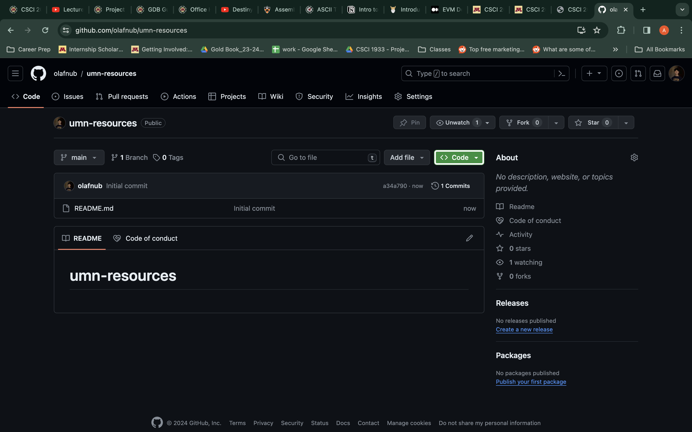
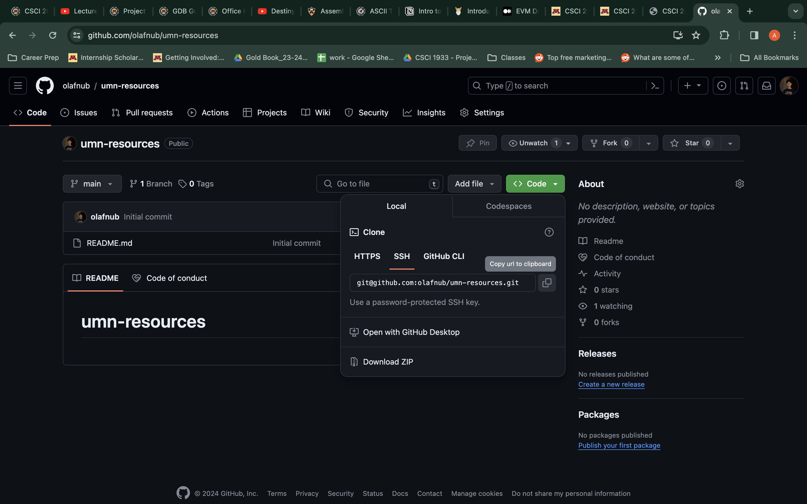
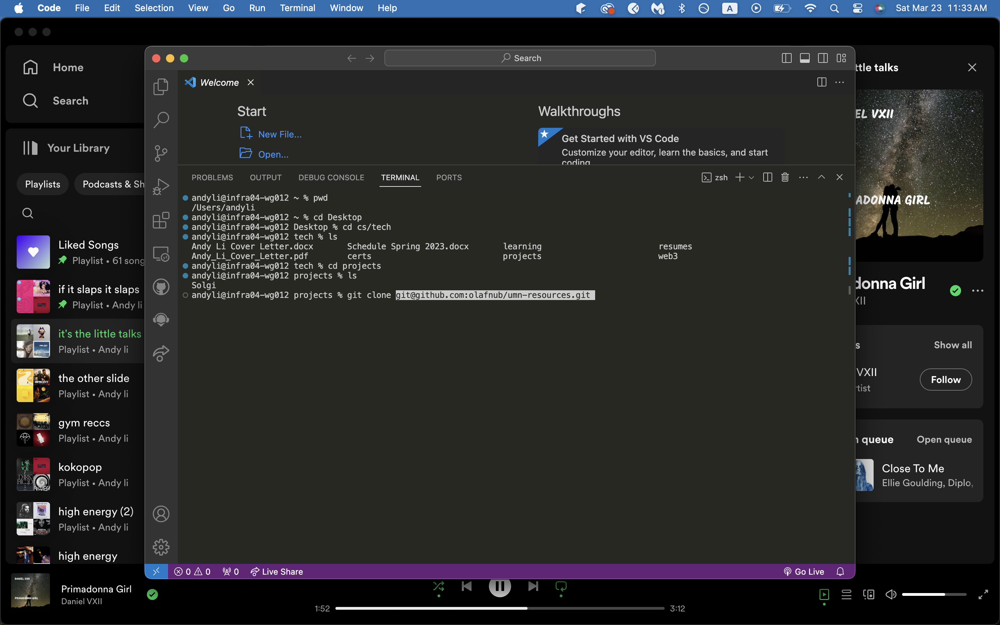
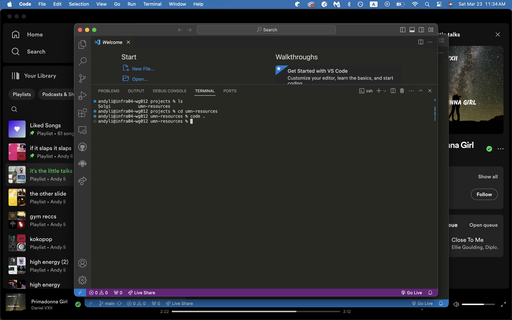

Tools you’ll need to download for web development
Before anything, download VS-Code if you have it installed already → https://www.theodinproject.com/lessons/foundations-text-editors
Agenda:
Step 1 - Install Git and Github:
Follow this and it should guide you step by step → https://www.theodinproject.com/lessons/foundations-setting-up-git
Example for me when setting this up:
git config --global user.name "olafnub"
git config --global user.email "li002488@umn.edu"
olafnub is my github username → https://github.com/olafnub
Step 2 - Learn about Git and Github:
This dives into the basics (if you go into SWE route, you’ll be using these commands for projects 90% of the time) → https://www.theodinproject.com/lessons/foundations-git-basics
Peep below
1. Create a repository on github, make sure to check include README.md
2. Click on Code and then copy SSH link
3. Inside your personal terminal or VsCode terminal, git clone paste-in-link
4. cd into your new repository / folder
5. Then write code . to open up a new Vscode with the appropriate folder
Step 3 - Learn HTML and CSS
HTML is basically the texts and pictures on the page that you see here, CSS is the thing used to style all of it.
So for example THIS uses CSS to make it pink.
Making the text bigger and smaller are all CSS’s work
Github / Source Code -> https://github.com/olafnub/umn-resources